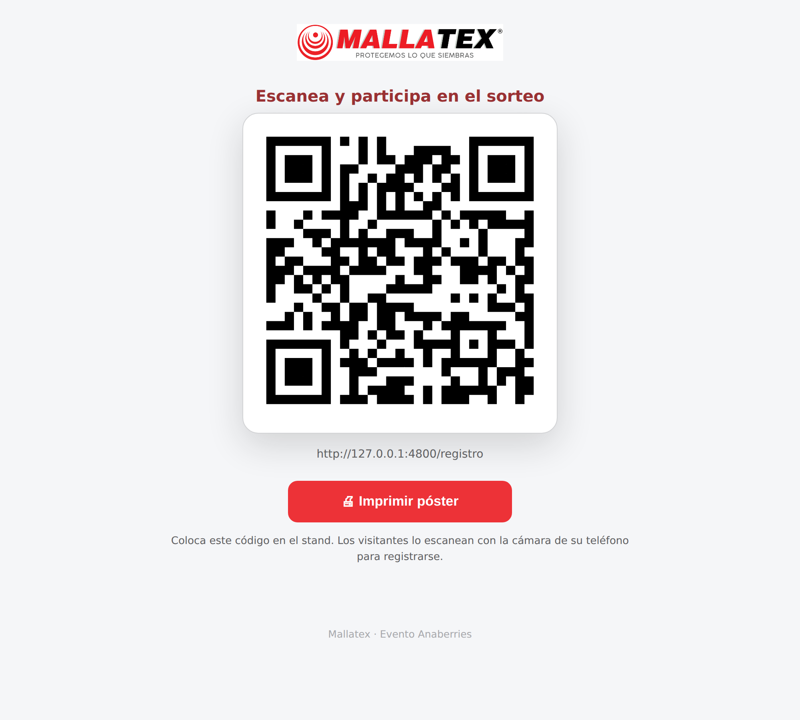
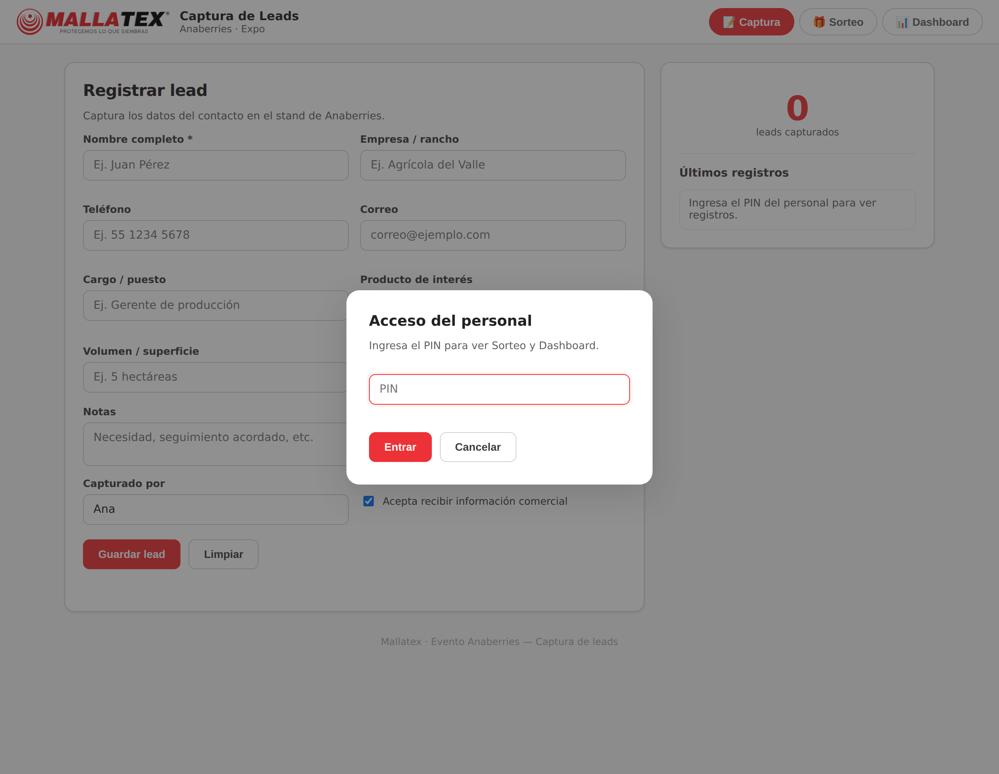
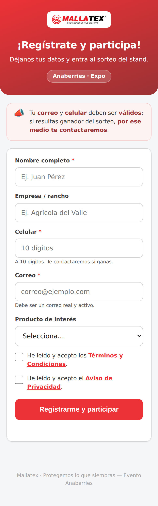
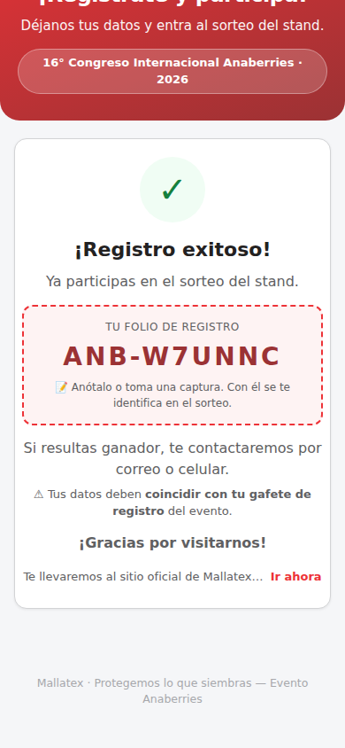
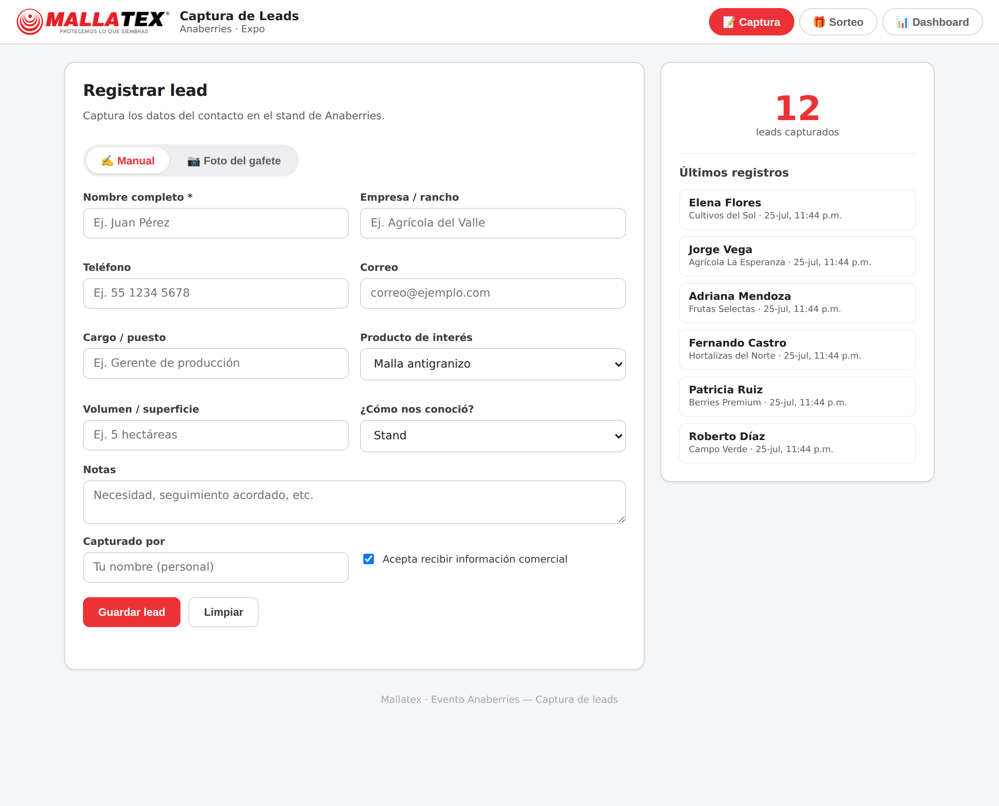
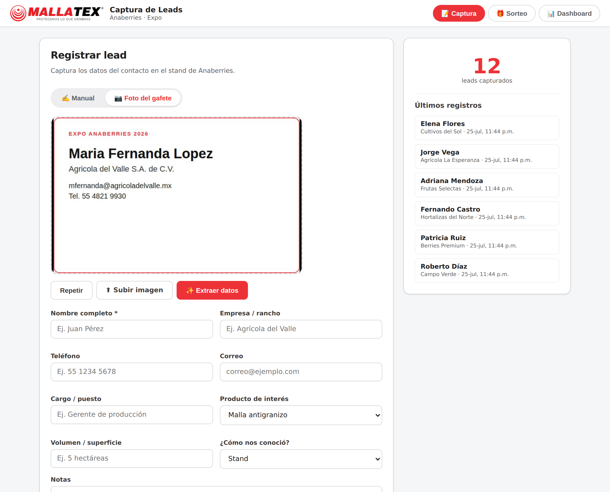
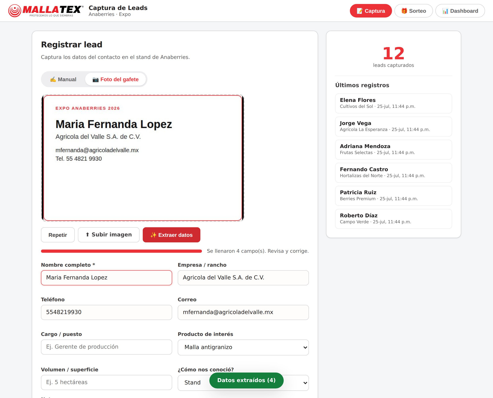
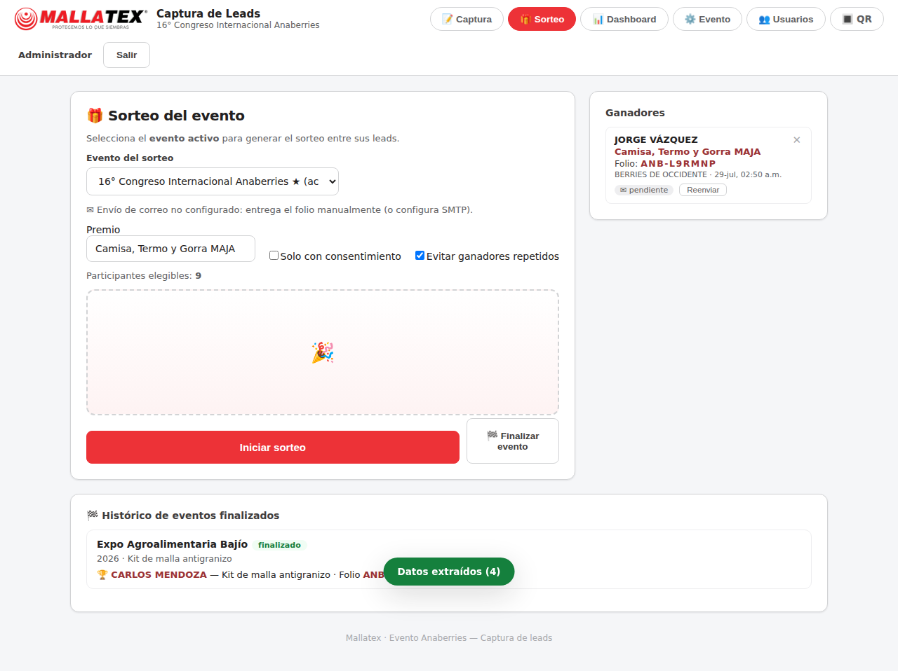
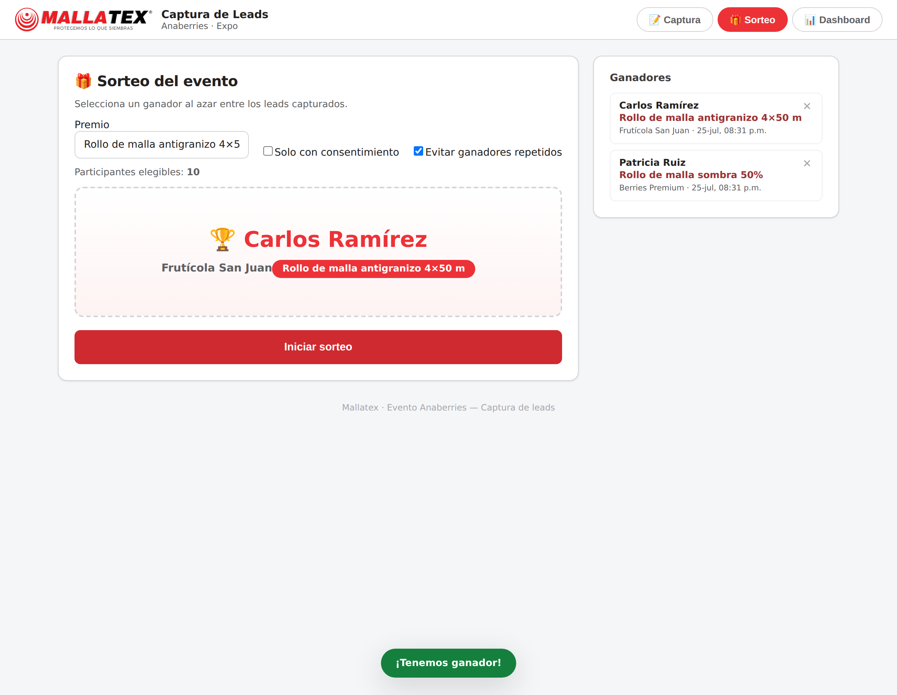
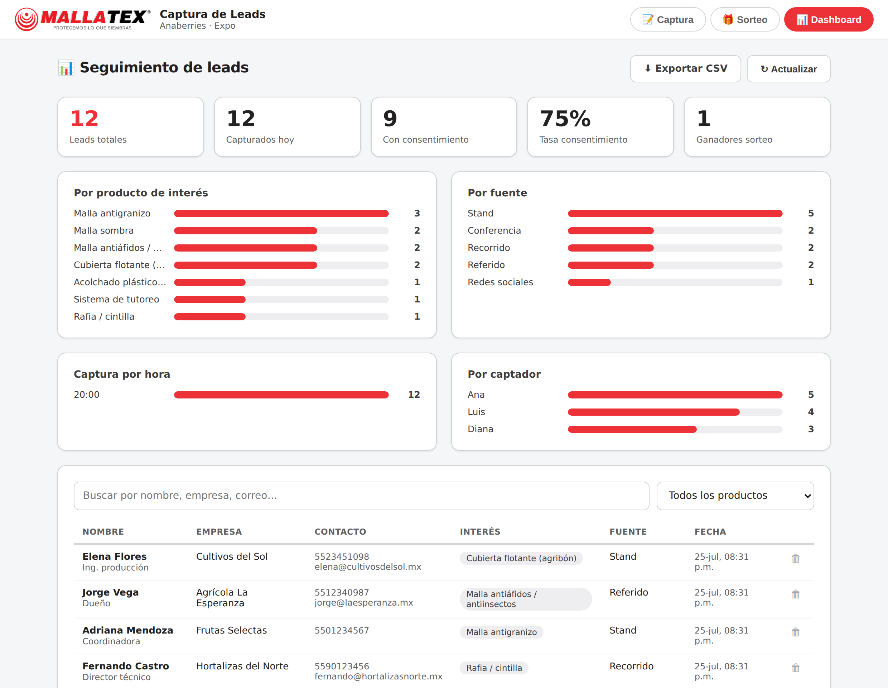

Guía de usabilidad para el personal del stand: autoregistro por QR, captura de leads, sorteo y seguimiento.
Versión 1.0 · Julio 2026
Mallatex · Protegemos lo que siembras
Contenido
1 Introducción
Esta plataforma permite capturar los datos de los visitantes (leads) del stand de Mallatex en el evento Anaberries, realizar un sorteo de premios entre ellos y dar seguimiento desde un panel. Este manual está dirigido al personal del stand (staff) y explica el uso diario paso a paso.
Dos formas de registrar a un visitante
Forma
Quién la usa
Cómo
Autoregistro por QR
El propio visitante
Escanea el código QR del stand con su teléfono y llena sus datos en la landing.
Registro por el staff
El personal del stand
Si el visitante no puede escanear, el staff captura los datos (a mano o tomando foto del gafete).
Objetivo: que ningún visitante se quede sin registrar. El QR agiliza; el registro por staff es el respaldo.
Las tres secciones de la app del staff
📝 Captura — registrar leads manualmente o por foto del gafete.
🎁 Sorteo — elegir un ganador al azar entre los leads.
📊 Dashboard — ver estadísticas, buscar leads y exportar a Excel/CSV.
2 Preparación antes del evento
Publicar la plataforma con una dirección web e HTTPS (candado de seguridad). Es indispensable para que la cámara y el QR funcionen desde los teléfonos.
Definir el PIN del personal que protege el Sorteo y el Dashboard. Compártelo solo con el staff.
Imprimir el código QR: abre la página /qr y usa el botón Imprimir póster. Colócalo visible en el stand.
Revisar los textos legales (Términos y Aviso de Privacidad) con la información de Mallatex.
Probar un registro de principio a fin desde un teléfono antes de abrir el stand.

Página /qr: código para imprimir y colocar en el stand.
Consejo: pega el QR a la altura de los ojos y agrega una frase llamativa como “Escanea y participa en el sorteo”.
3 Acceso del personal (PIN)
La Captura de leads está abierta para agilizar el stand. El Sorteo y el Dashboard piden un PIN para proteger la información.
Abre la app del staff en el navegador.
Toca la pestaña Sorteo o Dashboard.
Escribe el PIN y presiona Entrar. Quedará recordado en ese dispositivo.

Ventana de acceso del personal por PIN.
Si el PIN se ingresó en un dispositivo compartido, ciérralo al terminar borrando los datos del navegador, o usa un dispositivo exclusivo del staff.
4 Autoregistro del visitante por QR
El visitante escanea el QR con la cámara de su teléfono y abre la landing de registro. Es mobile-first: se ve bien en cualquier celular.
Qué llena el visitante
Nombre completo, empresa o rancho.
Celular y correo válidos — la landing muestra un aviso de que por ese medio se contactará al ganador.
Producto de interés.
Aceptación de Términos y Condiciones y Aviso de Privacidad (obligatoria).

Landing de autoregistro (vista en celular) con el aviso de contacto.
Al enviar, el visitante ve una confirmación y queda participando en el sorteo:

Confirmación de registro exitoso.
Si alguien intenta registrarse dos veces con el mismo correo o celular, el sistema lo reconoce y muestra “¡Ya estabas registrado!” sin duplicar.
5 Registro por el staff (respaldo)
Usa esta opción cuando un visitante no puede escanear el QR (sin cámara, sin datos, batería baja, etc.). En la pestaña 📝 Captura elige el modo Manual o Foto del gafete.

Pantalla de Captura con el selector Manual / Foto del gafete.
5.1 Captura manual
Selecciona el modo ✍️ Manual.
Escribe al menos el nombre y un medio de contacto (celular o correo).
Completa empresa, cargo, producto de interés y notas si aplica.
Escribe tu nombre en Capturado por (queda recordado).
Presiona Guardar lead. Verás la confirmación y el contador aumentará.
Si el correo o el celular ya existen, el sistema avisa que es un duplicado y te pregunta si deseas guardarlo de todas formas.
5.2 Captura por foto del gafete (OCR)
El sistema puede leer el gafete y llenar los datos automáticamente.
Selecciona el modo 📷 Foto del gafete.
Toca Abrir cámara y Tomar foto, o usa Subir imagen.
Presiona ✨ Extraer datos y espera unos segundos.
El nombre, empresa, correo y teléfono se llenan solos. Revisa y corrige lo necesario.
Completa el producto de interés y presiona Guardar lead.

Foto del gafete lista para extraer.

Datos autocompletados por el lector (OCR).
Para una mejor lectura: buena luz, gafete plano y encuadrado, sin reflejos ni sombras. El OCR es una ayuda; siempre verifica el correo y el celular antes de guardar.
6 El sorteo
En la pestaña 🎁 Sorteo eliges un ganador al azar entre los leads capturados.
Escribe el premio (ej. “Rollo de malla antigranizo”).
Opcional: activa Solo con consentimiento y/o Evitar ganadores repetidos.
Verifica el número de participantes elegibles.
Presiona Iniciar sorteo. Tras la animación aparece el ganador.

Configuración del sorteo.

Ganador anunciado y guardado en el historial.
El ganador queda en el historial con su premio. Si necesitas repetir un sorteo, puedes anular el resultado desde la lista de ganadores (botón ✕).
7 Dashboard de seguimiento
La pestaña 📊 Dashboard muestra el avance del stand en tiempo real.
Indicadores: leads totales, del día, con consentimiento, tasa de consentimiento y ganadores.
Gráficas: por producto de interés, por fuente (incluye “Autoregistro (QR)”), por hora y por captador.
Tabla de leads: búsqueda por nombre/empresa/correo y filtro por producto. El ícono 📷 abre la foto del gafete.
Exportar CSV: descarga todos los leads para abrirlos en Excel y darles seguimiento comercial.

Dashboard con indicadores, gráficas y tabla de leads.
8 Buenas prácticas en el stand
Invita a todos a escanear el QR; ten el póster siempre visible.
Ten un dispositivo del staff listo para registrar a quien no pueda escanear.
Confirma en voz alta el correo y el celular: por ahí se contacta al ganador.
Anota el producto de interés; es clave para el seguimiento comercial.
Revisa el Dashboard durante el día para conocer el avance.
Realiza el sorteo en el horario anunciado y comparte al ganador.
9 Solución de problemas
Situación
Qué hacer
La cámara no abre
Verifica que la página use HTTPS y da permiso de cámara al navegador. Alternativa: usa Subir imagen.
El visitante no puede escanear el QR
Regístralo tú desde 📝 Captura (manual o foto del gafete).
El OCR no leyó bien
Toma la foto con buena luz y gafete plano; corrige los campos a mano antes de guardar.
Dice que el lead está duplicado
Es normal si ya se registró. Puedes continuar o descartarlo.
No entra al Sorteo/Dashboard
Ingresa el PIN del personal. Si lo olvidaste, pídelo al responsable.
No hay internet en el stand
La captura por gafete (OCR) funciona sin internet; el autoregistro por QR y el guardado requieren conexión al servidor.
10 Checklist rápido
Antes de abrir
QR impreso y colocado.
PIN del personal a la mano.
Dispositivo del staff con la app abierta y probada.
Textos legales revisados.
Durante el evento
Invitar a escanear el QR.
Registrar a quien no pueda escanear.
Verificar correo y celular de cada lead.
Revisar el Dashboard periódicamente.
Al cierre
Realizar el sorteo y anunciar al ganador.
Exportar el CSV de leads.
Respaldar la información del evento.
Mallatex · Evento Anaberries — Manual del Staff · Protegemos lo que siembras